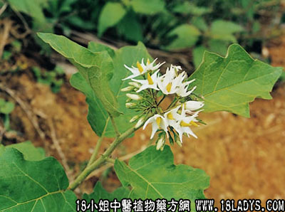

金钮头(中药材植物名:水茄)(植物科目:茄科)

别名：金钮扣、金杉钮。
植物名：水茄。
生长环境：本品为灌木，生于路旁、水沟边、荒屋烂地。
分布：广州市郊常见之。
入药部分：根。
采集期：全年采根。
自采地点：郊野、荒地。
性味：性微凉、味淡。
功能：散瘀、消肿、止痛。
主治、用量和用法：1、劳伤苦伤：用干根1至2两，清水煎服，或加猪瘦肉同煎；2、跌打肿痛：用法同上；3、胃痛：用干根1至2两，加猪瘦肉，清水煎服。
验方1：（治劳伤苦伤方）金钮头1两、下山虎5钱、江菱根5钱、龙船花根5钱、清水三碗半煎成一碗温服。
（方解）本方金钮头散瘀，下山虎、龙船花根解郁行气，红菱根清肝肺热，止咳血。合为化瘀疗伤之有效方剂。
（方歌）苦伤劳伤咳血多，潮热胸翳奈若何，红菱金钮下山虎，龙船花根煎服瘥。
验方2：（治跌打瘀肿方）：金钮头1两、黑老虎5钱、大罗伞5钱、入地金牛5钱、清水三碗煎成一碗，热服。
（方解）跌打积瘀，成为肿块，方中四药，俱能散瘀，而入地金牛，并能祛风，黑老虎既祛风又行气，气为血之帅，气行则血行，瘀血自能消散。
（方歌）跌打瘀肿为何因，皆因气滞血难行，金牛黑虎大罗伞，钮头一刀尽生新。